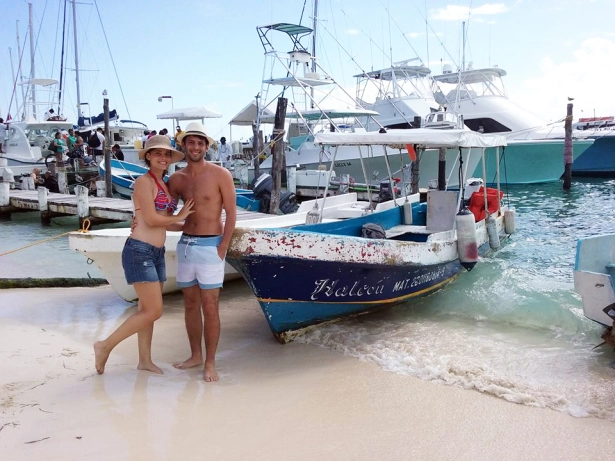
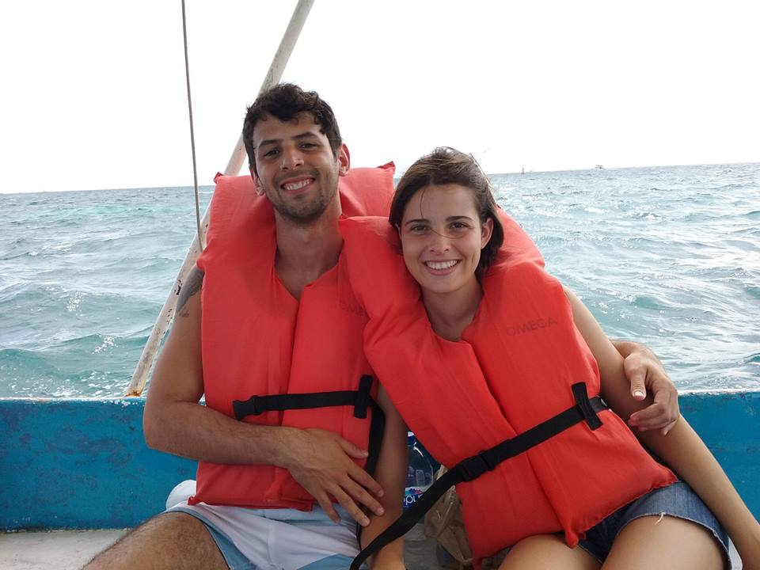
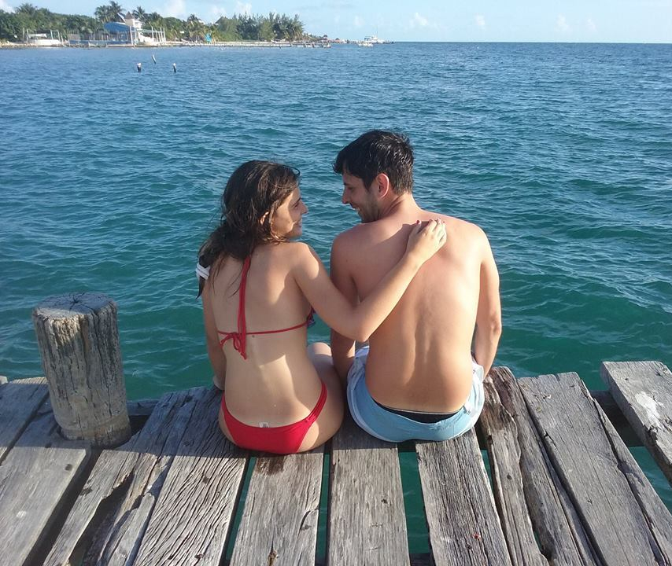
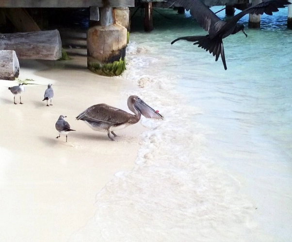

El día que teníamos pensado visitar la isla comenzó muy nublado, algo que nos preocupaba bastante. Desayunamos en Casa Che B&B, donde nos estábamos hospedando, y nos dirigimos a la parada de vans que se ubica en la carretera. Como ya era costumbre, usamos nuevamente este medio de transporte que a mi criterio es uno de los mejores, por alrededor de 40 pesos argentinos nos podemos movilizar muy bien y cómodamente por unos cuantos lugares de Quintana Roo. Las mismas hacen un recorrido por la Carretera Cancún-Tulum que pasa también por Akumal y Playa del Carmen y con solo levantar la mano se las para.
Desde donde nos dejó la van tomamos un taxi hasta Puerto Juarez, les recomiendo que lo compartan, hay mucha gente que hace el mismo trayecto con la van para llegar finalmente a Isla Mujeres y pueden coordinar con algunos acompañantes para abaratar costos. De todas maneras, ese día, al preguntar si alguien iba a hacer el mismo recorrido que nosotros obtuvimos un "no" como respuesta. Nos dirigimos a un taxi que se encontraba vacío y al comenzar a subir escuchamos que nos seguía desde atrás una pareja, divinos, esplendidos, se les notaba la sonrisa de recién casados dibujada en sus caras. Fue ahí cuando conocimos a Emi y a Mati, ella de Entre Ríos y él de Uruguay, fanático de Peñarol ¡Fue muy lindo, tener a alguien para hablar de fútbol después de unos cuántos días! Pagamos el taxi, que salió verdaderamente barato al dividirlo por cuatro personas y nos dimos cuenta que tendríamos una grata compañia en lo que restaba del día.
Embarcadero de Isla Mujeres, Quintana Roo, México.
Al llegar a Puerto Juarez los van a atormentar con tours ofreciéndoles excursiones y transfer hacia la isla, sinceramente, les conviene económicamente tomarse los ferrys que salen desde las terminales del puerto y luego contratar las excursiones en Isla Mujeres. En realidad, todo depende, la diferencia es que la excursión con transfer se regatea y nunca sabemos si estamos pagando un precio alto o bajo, en cambio, los ferrys de línea tienen precios preestablecidos. Nosotros viajamos por la empresa Ultramar, la cual funciona de 5:00hs a 23:30hs para la ida desde Cancún a Isla Mujeres y para la vuelta tiene un rango horario que va desde las 5:30hs hasta las 00:00hs. Pueden chequear los precios actualizados en www.ultramarferry.com
El trayecto dura aproximadamente 20 minutos y en él ya empezamos a divisar las aguas turquesas y casi perfectas del Caribe. En Isla Mujeres el Caribe es más Caribe, es la zona más cercana a Cuba y escuchamos una historia por las pequeñas callecitas de la isla que decían que muchos cubanos venían en barcas caseras escapando de su país, algunos llegaban y otros no, más que una historia me suena a una leyenda, la distancia hasta Cuba es de casi 500km.
Apenas pisamos la arena, otra vez empezó el desfile de empresas turísticas donde nos ofrecieron un tour de snorkel para conocer el Faro y Playa Tiburón, en ese momento, junto con Emi, empezamos a indagar sobre el MUSA (museo subactuático de arte) un lugar mágico donde se pueden ver distintas figuras humanas, autos y otras tantas esculturas hundidas en el fondo del mar.
Barca de la excursión.
Antes de empezar el recorrido, decidimos ir a buscar algunas provisiones y hacer una visita rápida por la isla, es verdaderamente chica en cuanto a su ancho (de largo no tanto) y con solo caminar un poco podemos llegar de una costa a la otra. El tour arrancó y las nubes ya se habían disipado luego de que garue suavemente unos minutos. Arriba del pequeño barco nos encontrábamos Mechi, la pareja de recién casados, dos jóvenes (más bien adolescentes) que venían tomando cerveza desde que arrancó la excursión y yo. Un grupo pequeño, pero con mucha buena onda.
Después de bordear la isla para conocer todas sus extremidades el barquito se adentró en el mar, hasta un punto donde frenó de golpe, el capitán nos miró fijamente y nos dijó: ¿Ven eso de allá? Mientras con su mano señalaba una forma que se veía como esfumada a lo lejos. Era el faro, y la propuesta de él, era que nademos desde donde estábamos hasta allí recorriendo el arrecife. Era verdaderamente lejos, pero aceptamos. En el trayecto de nado vimos millones de peces de distintos colores y tamaños, algas, la verdad todo divino, hasta que en un momento el guía nos frenó estrepitosamente lo cual nos generó un susto muy grande, estábamos delante de una medusita bien pequeña ¿Tanto por una medusa? Nos preguntamos. Efectivamente, el joven que guiaba nos explicó que era una de las medusas más venenosas de esas zonas, que si bien no era letal, su picadura producía una reacción grave que seguramente nos arruinaría el resto de las vacaciones.
Sorprendidos y maravillados por lo increíble de la naturaleza seguimos nuestro tour hacia MUSA. El mar estaba bastante agresivo y fue toda una aventura nadar entre olas que nos elevaban casi a un metro y medio de altura mientras observábamos el fondo oceánico con verdaderas bellezas artísticas, les recomiendo que insistan al alquilar las excursiones ya que este museo no suele estar en todas las agendas de las empresas turísticas de la isla.
Playa Tiburón, Isla Mujeres, Quintana Roo, México.
El tour finalizó en Playa Tiburón, un lugar que de tiburones tiene poco ya que solo se llama así porque tienen a uno encerrado en 2 metros cuadrados, algo totalmente asqueroso y repudiable. Pero bueno, la playa en sí, no tiene la culpa y es muy bonita, los barquitos paran generalmente para almorzar. Allí pudimos tomar algunas de las fotos más lindas.
Cuando finalizamos la excursión ya estaba oscureciendo, pero nos quedo tiempo para disfrutar el atardecer en una de las playas más lindas que vi en mi vida, Playa Sol, agua a una temperatura divina y muy calma, arena fina, y una fauna aviar que nos dejó con la boca abierta.
Fauna aviar en Playa Sol, Isla Mujeres, Quintana Roo, México.
Fue un día increíble, todo se alineó entre sí con una armonía admirable, cada detalle, desde Emi y Mati, las nubes al comienzo que después se hicieron sol, la medusa cerca del faro, el museo subacuático, las aves más hermosas que vimos en nuestras vidas y un atardecer de película con Mechi, todo fue perfecto. Al subir al ferry y girar la vista atrás pude contemplar como dejábamos atrás ese paraíso y sentí algo que no había sentido en otros lugares, una mezcla de alegría y de tristeza, un querer volver antes de irme, un querer que estoy seguro que en algún tiempo se volverá poder.